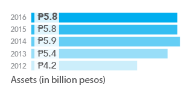

Annual
Report
2016
106 More Reasons to
Live Life to the Fullest
Annual
Report
2016
106 More Reasons to
Live Life to the Fullest
Insular Health Care, Inc. (IHCI) is one of the top ten health maintenance organizations (HMOs) in the Philippines in terms of capitalization, comprehensive healthcare packages and service delivery. IHCI offers one of the industry’s most comprehensive healthcare programs with the flexibility to meet the specific needs of its members. As of end of 2016, it maintains a network of 2,910 hospitals, outpatient facilities and dental clinics, and a roster of 24,406 medical specialists nationwide.
IHCI maintains a dynamic website with an online application function, a rate calculator that computes membership fees for individual and family accounts, and payment facilities. Also in the website are the on-going sales promos, a Body Mass Index (BMI) calculator, monthly medical articles, and an agent application facility. IHCI also utilizes a Short Messaging System (SMS) broadcast facility and email blast to communicate with members.
IHCI recently launched its mobile application called Insular Health Care Mobile Assistant or IMA. With IMA, members have online access to their membership data, the updated list of doctors and hospitals/clinics (via a search engine), and regular health bulletins and membership updates through their smart mobile phones (Android and iOS). It also launched Insular Health Care Web Assist or IWA. Together with IMA, IWA enables the hospital staff to verify the status of each and every IHCI member online, minimizing the need for calls to the call center and thus providing faster and more efficient status verification. IHCI’s new membership ID with QR code capability is a convenient way of accessing the membership data, with IHCI equipping select hospitals with the QR code reader, with more accredited hospitals to be equipped in the near future.
Home Credit Mutual Building & Loan Association, Inc. (Insular Home Credit) is a wholly-owned subsidiary of Insular Life that primarily assists its members in availing affordable and low cost housing. In addition Insular Home Credit offers a high yielding disciplined savings program for its members with the additional benefit of quick access to multi - purpose cash loans.
In 2016, Insular Home Credit committed itself to being socially significant in the community via its partnership with developers of affordable and socialized housing. They are a growing lender in this market having surpassed the prior four (4) years of mortgage volume in one (1) year.
MAPFRE INSULAR, today, ranks among the top 10 in the non-life insurance industry in terms of earned premiums, investment income, and net income. The company is also among the highest capitalized and most solvent in the non-life insurance business in the country. The company was formed out of an alliance between MAPFRE, a leading insurance company in Spain with more than 34 million clients worldwide and business activity in more than 100 countries and Insular Life Assurance Co., Ltd., the Philippines’ largest Filipino-owned insurer.
The Company started 2016 with a sense of grit as it entered the second year of the massive transformation that MAPFRE INSULAR took in 2015. The plan was quite straightforward: MAFPRE INSULAR wanted sustainable growth and its formula for attaining this is to follow the hallmarks of solvency, integrity, innovation, and exceptional service that are standard in the global MAPFRE Group.
But like many worthwhile changes, this brand of transformation required fortitude because, as the Company predicted early on, success will be paved with sacrifices. Investments must be made in technologies and people. In the same vein, the company had to turn its back on risky practices such as unrealistic competition, never mind the tempting easy gains, because these endanger not just the business but the welfare of customers.
Despite this decision, however, MAPFRE INSULAR managed to post modest increase in sales, logging in P2.184 billion in gross premiums written in 2016, which is about 7 percent higher than 2015. Assets moved nearly sideways as the Company recorded P5.83 billion in assets as of end of 2016.
